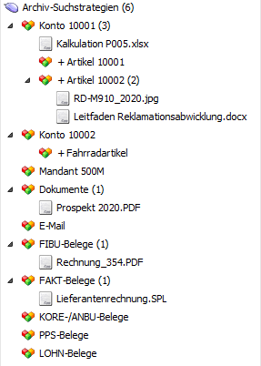

Unter "Archiv - Suchstrategien" werden zunächst alle Suchstrategien angezeigt, die im Programmbereich "Archiveintrag suchen" (Datei - Archiveintrag suchen) angelegt wurden.

Per Drag & Drop können neue Archiveinträge in die Suchstrategien verschoben werden. Dieses Drag & Drop in eine Archiv-Suchstrategie bewirkt folgendes:
ü Vorbelegung von Schlagwörtern
Bereits
zugeordnete Schlagwörter werden aufgrund der Suchstrategie automatisch
befüllt.
Beispiel
In dem Inbox-Bereich wurde dem Dokument
"Kalkulation P005.xlsx" bereits das Schlagwort "001 - Kontonummer" (aber ohne
Inhalt) zugeordnet. Diese Datei wird anschließend per Drag & Drop in die
Archiv-Suchstrategie "Konto 10001" geschoben.
Da in der Suchstrategie
hinterlegt ist, dass das Schlagwort "001 - Kontonummer" der Nummer "10001"
entsprechen soll, wird auch die Beschlagwortung des Dokuments entsprechend
gebildet.
ü Ergänzung und Vorbelegung von Schlagwörtern
Aufgrund
der Archiv-Suchstrategie werden noch nicht vorhandene Schlagwörter eingetragen
und mit dem Wert der Suchstrategie befüllt.
Beispiel
In dem Inbox-Bereich wurde dem Dokument
"Kalkulation P005.xlsx " noch kein Schlagwort zugeordnet. Diese Datei wird
anschließend per Drag & Drop in die Archiv-Suchstrategie "Konto 10001"
geschoben.
Da in der Suchstrategie hinterlegt ist, dass das Schlagwort "001 -
Kontonummer" der Nummer "10001" entsprechen soll, wird auch in dem Dokument "
Kalkulation P005.xlsx" das Schlagwort "001 - Kontonummer" hinterlegt und mit der
Nummer "10001" befüllt.